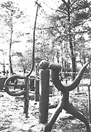
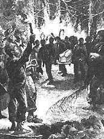

|
Slaves on Southern and Caribbean plantations followed their African ancestors in
attaching great significance to what they called "a good burial." The funeral
was considered life's true climax. At once a religious ritual, a major social
event, and a community pageant, the slave funeral drew upon cherished tradition.
Slave funerals celebrated the African belief that upon dying the deceased went
"home." Some believed their spirits were literally transported back to their
African homeland. Thus, the slaves sang, danced, and drank the departed one
"home." An appropriate funeral also helped guard against the return of a
restless spirit.
|

Sculptures in a graveyard of Georgia slaves
|
Tradition and custom were carefully observed upon the death of a slave, but
New World equivalents often had to be improvised in the preparation of the body.
While a coffin was being made, the body was laid out on a cooling board. Most
commonly coffins were constructed by skilled slave carpenters or purchased by
the masters. Sometimes the body was simply wrapped in a blanket to be carried to
the burial ground in a handbarrow. In the cities coffins were often furnished by
the burial lodges to which some slaves belonged. The completed coffin was lined
with straw, and perhaps the body was wrapped in winding sheets. Occasionally the
coffins were more ornate, lined with cambric and lace and personal objects of
the departed.
In the semitropical heat of Southern and Caribbean plantations, corpses
quickly decayed, and the slave community had to protect the dead from prowling
cats and other animals. From Virginia to Louisiana, from South Carolina to
Barbados, the slaves would "sit up" all night with the dead, singing and praying
through the night.
Some masters refused to allow their slaves time off to attend funerals. More
commonly, however, masters gave the slaves a day off for the burial. Typically,
the whole plantation--every man, woman, and child who could walk--turned out for
the funeral. Slaves who were able to obtain passes came from nearby plantations.
The funerals of urban slaves in Richmond, Charleston, Savannah, and New Orleans
were attended by gatherings sometimes numbering more than a thousand. Whites
frequently attended plantation funerals; they attended urban ones less often.
White ministers conducted slave funerals with some frequency, but even more
frequently black preachers themselves officiated, owing something both to white
indifference to the souls of their bondsmen and black preference for their own
preachers. After the insurrectionary scares of Denmark Vesey and Nat Turner,
however, whites grew alarmed at the growing influence of slave preachers.
|

A midnight slave funeral
|
Night funerals were the norm on the plantations of the Old South, and in the
Caribbean until laws in Jamaica in 1816 and Barbados in 1826 put an end to the
practice. Night funerals also came in for special criticism from urban
slaveholders. Night funerals for slaves were forbidden in New York in 1772 and
in New Orleans in 1808, and they were perennial subjects of white concern.
Despite urban fears, however, the night funeral persisted in the countryside,
partly because of plantation labor requirements and partly because of the
slaves' cultural preference.
After the slave community had a last look at the deceased brother or sister,
the coffin would be nailed shut and transported to the burial ground.
Pallbearers in Antigua, Barbados, and Jamaica, following Akan and Ga tradition,
reeled and staggered about, zigzagging from one side of the street to the other.
On Southern plantations the slow procession of mourners carried pine torches to
light the way to the burial ground. The coffin and pallbearers led off, followed
by the family of the deceased and the master's household, with the slave
community and visitors bringing up the rear. Urban funerals were sometimes quite
elaborate. Whether urban or rural, the processions to the graveyard were always
accompanied by slow, mournful spirituals.
When the procession arrived at the burial site, the slaves marched around the
grave. From the South Carolina Sea Islands to Barbados, graves were dug
east-west. The body was buried with its head to the west, its eyes facing
Africa. This positioning followed both African and European tradition, although
the cultural meaning of the practice varied. After the body was lowered into the
ground, the mourners threw clods of dirt into the grave.
Throughout the New World, from Haiti and Guadeloupe to Mississippi, Georgia,
and South Carolina, the graves were decorated with the last objects used by the
departed, and especially with broken bits of earthenware, colored glass, and sea
shells--a continuation of the Kongo-Angolan belief in the grave as a charm for
the persistence of the spirit. Sometimes carved wooden figures or patchwork
quilts were laid upon the grave.

Leaving goods on a grave for use in the afterlife was common,
a custom brought over from Africa.
|
On the return from the gravesite, the slaves' songs became more rhythmic and
spirited, accompanied by hand clapping and body movements. Funeral processions
were accompanied by drums in the Caribbean and in the South Carolina Sea Islands
after Union occupation in 1862. After the funeral, the slave community visited
the departed's family to express their condolences. Sociable feasts--considered
boisterous by whites for their singing, and dancing, and drinking--celebrated
the spirit's trip "home" and distracted the family from moping over their loss.
According to West African tradition, however, a period of time had to elapse
after interment before the deceased's spirit could be at rest. As in West
Africa, on Southern and Caribbean plantations the "first burial" was considered
temporary; and a "second burial"--a memorial service at which the entire slave
community gathered--was held weeks later. This "two-burial" custom was often
denigrated by white observers who did not understand the religious tradition
behind it.
Of course not all slave deaths were accorded what the slave community
considered an appropriate funeral. By African standards, that was slavery's
ultimate degradation.
Source: Randall M. Miller and John David Smith, eds. Dictionary of
Afro-American Slavery (Westport, CT: Praeger, 1997), 88-90.
|